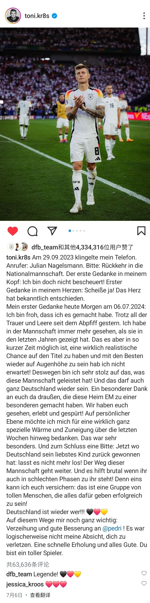
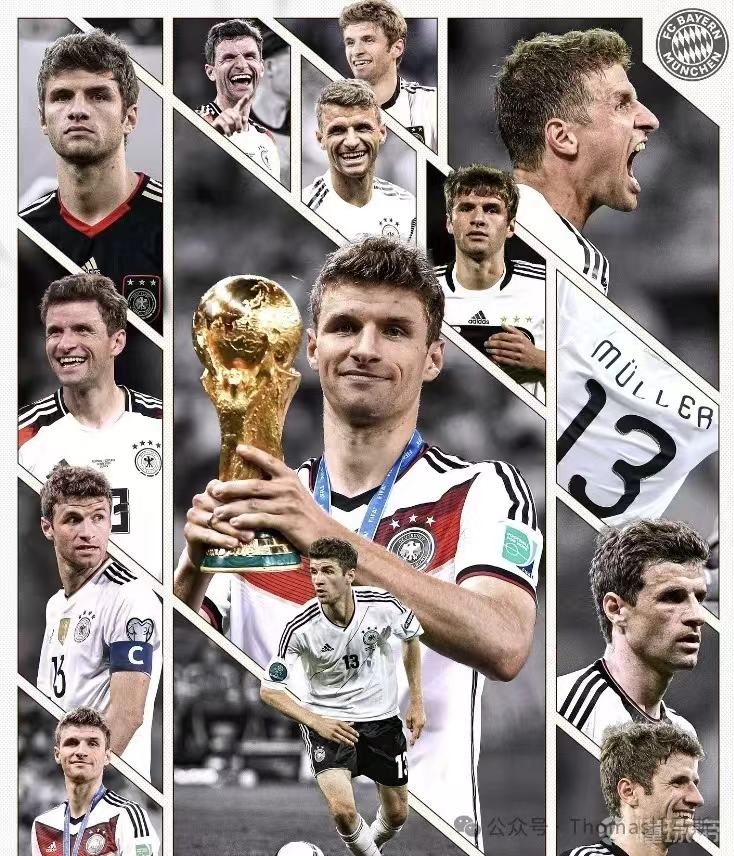

2024-07-15 我们喜欢的球员都退役了
目录
7月6日，欧洲杯八分之一决赛，德国不敌西班牙，出局。
楚噶喜欢了十几年的克罗斯在赛后宣布退役。克罗斯是德国最伟大的球员之一。

7月9日，我最喜欢的球员蒂亚戈宣布退役。
蒂亚戈在巴萨的时候，由于哈维的存在，他未能获得稳定的出场机会。转会利物浦后，频繁的伤病使得他逐渐淡出球迷的视线。只有中间在拜仁慕尼黑的时光，他是拜仁的核心球员，是拜仁的大脑。
2013年夏季，拜仁慕尼黑以2500万欧元的价格签下了蒂亚戈。在拜仁效力的七年中，他助力球队赢得了7次德甲联赛冠军、4次德国杯冠军、1次欧洲冠军联赛冠军、1次国际足联俱乐部世界杯冠军、1次欧洲超级杯冠军以及3次德国超级杯冠军。
我很遗憾他的职业生涯没有预料中发展得好，但是我很庆幸他在拜仁的时光。
7月15日，没有人不喜欢的二娃穆勒宣布退出德国国家队，他在拜仁也只剩下最后一个赛季。
2010年，“今天代表德国队出场的边锋是一位小将，他叫托马斯穆勒，他也身穿此前德国队中场巴拉克的13号球衣登场，让我们期待他的表现。”
2024年，“14年前，当我第一次为国家队出战时，我做梦都想不到会经历这些，在131场国家队比赛以及打进45个进球后，今天我将退出德国国家队。”

花有重开日，人无再少年。我和你们一样变老了，但是陪伴这么多年，觉得很好。谢谢你们，谢谢足球带给我的快乐和热情。
Servus!